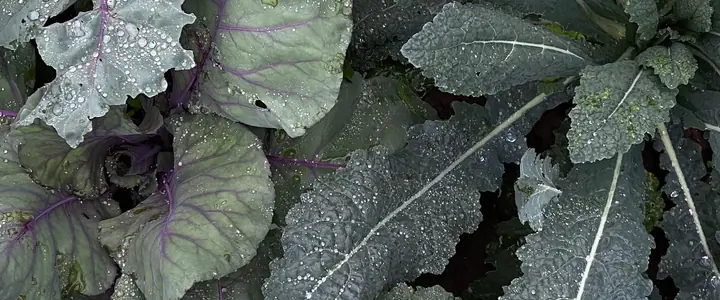
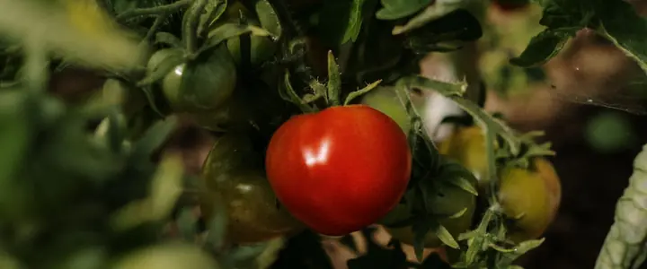
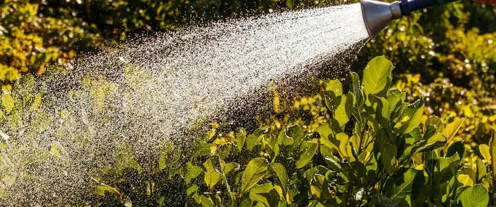

Oregon · Washington · Idaho
What to plant in July
Peak summer and the hinge of the year: harvest summer crops while you sow and plant for fall and winter.
West-side valleys5 outside
OutsideCarrotsBroccoliCabbageCauliflowerRadicchio
Based on typical frost dates in Portland. Colder gardens run later.
Coast5 outside
OutsideCarrotsBroccoliCabbageCauliflowerRadicchio
Based on typical frost dates in Astoria. Colder gardens run later.
East-side valleys5 outside
OutsideCarrotsBroccoliCabbageCauliflowerRadicchio
Based on typical frost dates in Pendleton. Colder gardens run later.
High desert42 outside
OutsideSpinachLettuceCarrotsBeetsSwiss chardBush beansSweet cornCucumbersZucchini and summer squashTomatoesPeppersBasilDahliasCilantroDillArugulaBok choyTurnipsKohlrabiEggplantMelonsPole beansChivesMintThymeOreganoSunflowersFig treesLavenderTomatillosZinniasCeleryGround cherriesSweet potatoesMustard greensMâcheSageLemon balmTarragonCosmosNasturtiumsMarigolds
Based on typical frost dates in Bend and Redmond. Colder gardens run later.
Inland Northwest5 outside
OutsideCarrotsBroccoliCabbageCauliflowerRadicchio
Based on typical frost dates in Spokane. Colder gardens run later.
Look up your town for its exact dates.
Every July planting date, by region (46 plants)
Dates are for one typical town in each region. Colder gardens run later.
| Plant | West-side valleys | Coast | East-side valleys | High desert | Inland Northwest |
|---|---|---|---|---|---|
| — | — | — | Plant Jul 20 – Aug 10 | — | |
| — | — | — | Plant Jul 20 – Aug 3 | — | |
| Plant Jul 23 – Aug 6 | Plant Jul 23 – Aug 6 | Plant Jul 23 – Aug 6 | Plant May 12 – Jul 7 | Plant Jul 20 – Aug 3 | |
| — | — | — | Plant May 12 – Jul 7 | — | |
| Plant Jul 23 – Aug 6 | Plant Jul 23 – Aug 6 | Plant Jul 23 – Aug 6 | — | Plant Jul 20 – Aug 3 | |
| Plant Jul 23 – Aug 6 | Plant Jul 23 – Aug 6 | Plant Jul 23 – Aug 6 | — | Plant Jul 20 – Aug 3 | |
| — | — | — | Plant May 12 – Jul 7 | — | |
| — | — | — | Plant Jun 16 – Jul 28 | — | |
| — | — | — | Plant Jun 16 – Jul 21 | — | |
| — | — | — | Plant Jun 9 – Jul 7 | — | |
| — | — | — | Plant Jun 9 – Jul 7 | — | |
| — | — | — | Plant Jun 9 – Jul 7 | — | |
| — | — | — | Plant Jun 16 – Jul 7 | — | |
| — | — | — | Plant Jun 16 – Jul 14 | — | |
| — | — | — | Plant Jun 9 – Jul 7 | — | |
| — | — | — | Plant Jul 27 – Aug 10 | — | |
| — | — | — | Plant May 12 – Jul 14 | — | |
| Plant Jul 16–30 | Plant Jul 16–30 | Plant Jul 16–30 | — | Plant Jul 13–27 | |
| — | — | — | Plant Jul 27 – Aug 17 | — | |
| — | — | — | Plant Jul 20 – Aug 3 | — | |
| — | — | — | Plant Jul 13–27 | — | |
| — | — | — | Plant Jul 13–27 | — | |
| — | — | — | Plant Jun 16 – Jul 7 | — | |
| — | — | — | Plant Jun 16 – Jul 7 | — | |
| — | — | — | Plant Jun 16 – Jul 21 | — | |
| — | — | — | Plant May 12 – Jul 7 | — | |
| — | — | — | Plant May 12 – Jul 7 | — | |
| — | — | — | Plant May 12 – Jul 7 | — | |
| — | — | — | Plant May 12 – Jul 7 | — | |
| — | — | — | Plant Jun 16 – Jul 28 | — | |
| — | — | — | Plant May 12 – Jul 7 | — | |
| — | — | — | Plant May 12 – Jul 7 | — | |
| — | — | — | Plant Jun 9 – Jul 7 | — | |
| — | — | — | Plant Jun 16 – Jul 28 | — | |
| — | — | — | Plant Jun 9 – Jul 14 | — | |
| — | — | — | Plant Jun 9 – Jul 7 | — | |
| — | — | — | Plant Jun 16 – Jul 7 | — | |
| — | — | — | Plant Jul 20 – Aug 10 | — | |
| — | — | — | Plant Jul 13 – Aug 17 | — | |
| Plant Jul 9–30 | Plant Jul 9–30 | Plant Jul 9–30 | — | Plant Jul 6–27 | |
| — | — | — | Plant May 12 – Jul 7 | — | |
| — | — | — | Plant May 12 – Jul 7 | — | |
| — | — | — | Plant May 12 – Jul 7 | — | |
| — | — | — | Plant Jun 16 – Jul 28 | — | |
| — | — | — | Plant Jun 16 – Jul 28 | — | |
| — | — | — | Plant Jun 9 – Jul 14 | — |
July garden jobs
Plant and sow
- Sow fall carrots, beets, turnips and kohlrabi. West-side valleys
- Set out fall broccoli, cabbage and kale starts late in the month. West-side valleys
- Sow fall peas and bush beans early in the month. West-side valleys
- Sow lettuce in a spot with afternoon shade so it doesn't bolt.
Start indoors
- Start more brassicas for overwintering west of the Cascades: purple sprouting broccoli, winter cabbage. West-side valleys
Harvest
- Garlic when the lower third of the leaves turn brown. Cure it somewhere shady and airy.
- Zucchini every day or two, before they turn into marrows.
- Beans, cucumbers, early tomatoes and raspberries.
- Onions once the tops flop over. East-side valleys
Garden care
- Water consistently. Uneven watering causes blossom-end rot on tomatoes and splits in cabbages.
- Mulch thickly to keep roots cool.
- Shade new seedlings and transplants during heat waves.
Pests and problems
- Watch for powdery mildew on squash and cucumbers; improve airflow and water at the base.
- Check tomatoes for late blight after any cool, wet spell. West-side valleys
- Spider mites show up on stressed plants in hot, dry weather. East-side valleys
Fruit, berries and flowers
- Cut summer raspberry canes that finished fruiting down to the ground.
- Order garlic seed now for fall planting; good varieties sell out.
- Keep picking flowers; dahlias bloom more the more you cut.
Read next

Fall and Winter Vegetable Gardening West of the CascadesHow to keep harvesting kale, carrots, garlic and greens through a mild Northwest winter, and when to plant for it.
Late Blight on Tomatoes: How to Spot It and Keep It AwayCool, wet weather makes late blight a real threat to Northwest tomatoes and potatoes. How to spot it, tell it from other leaf spots and prevent it.
How Much to Water Vegetables in a Dry Northwest SummerThe Northwest is rainy for nine months and bone dry for three. How much water vegetables need in summer, when to water, and how to waste less of it.